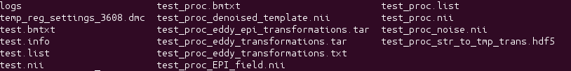
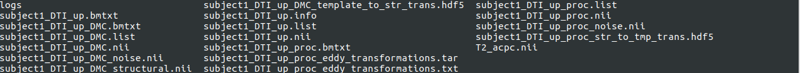

9. Outputs of DIFFPREP¶
There are two scenarios under which DIFFPREP can be run. The outputs for each will be shown below. Please note that the following example outputs shown were genarated using two separate datasets (test.nii and Subject1_DTI_up.nii) and therefore you will see two different types of file names in each scenario. If you are running with or without registration settings file, the file name changes in accoradance with the inout data name or the output name you give the DIFFPREP executable.
9.1. Scenario 1: DIFFPREP run without registration settings file.¶
The example outputs below are for a dataset of name ‘test’. The files are generated when using NO registrations settings file. Please note that there is a temp_reg_settings_3608.dmc present inside this folder and gives information about the options used in processing. Here an EPI correction was performed on the data. Please note that the final image written will have a generic name _EPI_field.ni. This name can be modified to a name of choice before running DIFFPREP. The tensor fitting will be performed on the final image output from DIFFPREP, in this case test_proc_EPI_field.nii.
| Outputs of DIFFPREP processing | Description |
|---|---|
| test.info | Text file describing the import routine used to create the proc folder. |
| test.bmtxt | initial bmtxt of the imported raw data. |
| test.list | A text file that describes the nii file and associated bmtxt for the data to be used in the diffprep processing. |
| test.nii | Raw dicom data saved as a 4d nii file after importing the data using the import routine. |
| test_proc.bmtxt | The same as the original bmtxt. |
| test_proc.list | A text file that describes the nii file and associated bmtxt for the data to be used in the DRBUDDI processing. |
| test_proc.nii | 4dnii file with gibbs ringing and denoising correction applied to it. |
| test_proc_str_to_tmp_trans.hdf5 | binary text file of the transformations from structrual to template. |
| test_proc_noise.nii | The information in this file is used in the generation of DMC noise file. This file gives a description of the general noise information in the data and saved as one volume. |
| test_proc_denoised_template.nii | b0 image where the denoising is applied. |
| test_proc_eddy_transformations.txt | text file with eddy transformation information. |
| test_proc_EPI_field.nii | Final image written out if EPI correction is switched on. |
9.2. Scenario 2: DIFFPREP run with registration settings file¶
The example below is of a dataset by name ‘subject1_DTI_up’. This dataset was the blip up data from a pair of dataset that went through DIFFPREP before going through DRBUDDI. A full DIFFPREP was run on this dataset to show the outputs. Please refer to the section ‘If using DRBUDDI’ to understand the new feature in TORTOISE 3.1 where certain extra steps in DIFFPREP can be skipped to go directly to DRBUDDI.
Dataset ‘subject1_DTI_down’ also went through DIFFPREP processing and the file names shown in the screenshot below, got replaced by subject1_DTI_down. This example was run without EPI correction on and a registration settings file was used here. Please read the notes after the description of outputs.
| Outputs of DIFFPREP processing | Description |
|---|---|
| subject1_DTI_up.info | Text file describing the import routine used to create the proc folder. |
| subject1_DTI_up.bmtxt | initial bmtxt of the imported raw data. |
| subject1_DTI_up.list | A text file that describes the nii file and associated bmtxt for the data to be used in the diffprep processing. |
| subject1_DTI_up.nii | Raw dicom data saved as a 4d nii file after importing the data using the import routine. |
| subject1_DTI_up_proc.bmtxt | The same as the original bmtxt. |
| subject1_DTI_up_proc.list | A text file that describes the nii file and associated bmtxt for the data to be used in the DRBUDDI processing. |
| subject1_DTI_up_proc.nii | 4dnii file with gibbs ringing and denoising correction applied to it. |
| subject1_DTI_up_str_to_tmp_trans.hdf5 | binary text file of the transformations from structrual to template. |
| subject1_DTI_up_noise.nii | The information in this file is used in the generation of DMC noise file. This file gives a description of the general noise information in the data and saved as one volume. |
| subject1_DTI_up_denoised_template.nii | b0 image where the denoising is applied. |
| subject1_DTI_up_eddy_transformations.txt | text file with eddy transformation information. |
| subject1_DTI_up_EPI_field.nii | Final image written out if EPI correction is switched on. |
| subject1_DTI_up_DMC.list | The final list file, that can be tensor fit using the DIFFCALC executables or converted to IDL DIFFCALC format using the convertor described in the upcoming sections. This list file points to the final corrected nii and bmtxt file. |
| subject1_DTI_up.bmtxt | final bmtxt file, where the numbers have been updated depending on the various corrections applied to the original data. You may convert the bmtxt to produce a bvals and bvecs file, using the excutable present in the DIFFPREP bin folder. |
| subject1_DTI_up.nii | The final 4d nii file with all the DIFFPREP corrections applied. |
| logs | A folder of logs, automatically generated, containing records of registration details. These files can referred, mainly used by TORTOISE tech support, to understand processing errors,if any. Also contains the log_main.txt that keeps a record of the command used in processing. |
Note
- There is no temp_reg_settings.dmc file generated within the proc folder as a registration settings file was provided when using the DIFFPREP command. The processing was done with the parameters that were defined in the registration settings file.
Note
- There are no EPI files in the above processed folder, as this particular dataset was run without the EPI correction switched on. The outputs of this DIFFPREP processing will be used together with the Down data processing, in the upcoming DRBUDDI processing.
Note
- If EPI correction was switched on, the final DMC outputs would have the EPI corrected data. If you are interested in looking at the outputs of the intermediate steps, please turn on ‘intermediate steps 1’ when running DIFFPREP. This will save, the outputs from the intermediate steps _rpd files for eddy and rpd EPI for EPI correction applied on the eddy corrected data. The DMC file generated from all of this, would be the eddy and EPI corrected data.
9.3. IF USING DRBUDDI¶
If you are using TORTOISE version 3.1 and you plan to do DRBUDDI31, please use the following tag ‘will be DRBUDDIED 1’ to skip few steps in DIFFPREP. Please do this for both your seprate DIFFPREP runs. The example below shows the outputs generated for the subject1_DTI_up, run through DIFFPREP, with the ‘will be DRBUDDIED’ option turned on.